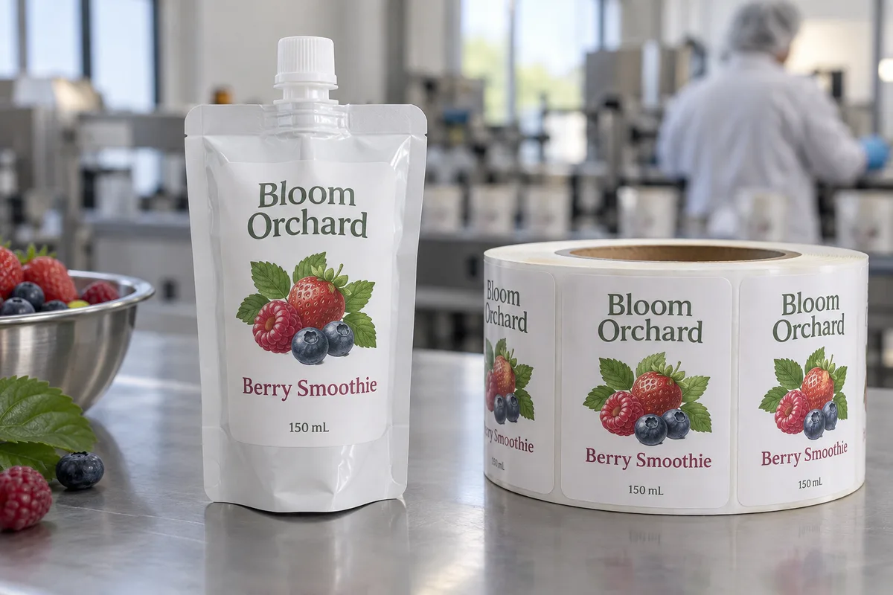

The filled pouch is the dieline test
A spouted pouch looks like a flat front panel on a screen. Once filled, the film bows; the bottom gusset expands; the shoulders pull toward the fitment. That is why I want the exact filled pouch before approving label dimensions. Measure a stable central panel below the spout and inside the side seals. A label that bridges a moving seam may wrinkle or peel when the pack is squeezed.
A composite buyer uses one pouch size for two smoothie flavors. The sensible economy is shared label shape and roll setup, with separate flavor art. But if one formula fills the pouch more fully, both finished packs should be tested. The same nominal volume does not guarantee the same front-panel tension.
Match adhesive to the pouch film and the sequence
The label adhesive touches the outside pouch film, not the fruit inside it. Ask the pouch supplier for the outer-film structure and any surface treatment. Avery Dennison's adhesive technology guide explains why plastics differ in surface energy and bond difficulty. A generic "plastic-safe" promise is too broad for a flexible pouch.
The temperature at the moment of application also matters. Labeling a dry pouch before freezing is a different problem from labeling a cold, damp pouch after freezing. Tell the factory which one you do. A durable film face can help with handling, but it cannot repair an untested cold-application sequence.
Protect the package function
Keep the label clear of the spout, cap, fitment welds, side seals and bottom gusset. Do not let artwork suggest that a label can be used as a structural seal. The product photograph is a fictional placement example, not a validated food-contact or compliance design. Any nutrition or ingredient panel must be built from the actual formulation and destination market.
I would choose a rounded rectangle with enough room around the edges for the pouch to flex. If the design needs to cover the entire pouch, direct-printed flexible packaging may be a more honest comparison than trying to scale up a sticker beyond the stable panel.
Proof the pack through real handling
Apply samples to filled pouches at the actual process stage. Inspect after freezing, stacking, transport simulation and customer-style squeezing. Check both corners and the area near the gusset. Record whether lifting began at application or only after flexing; the remedy may be a smaller label rather than a stronger adhesive.
For a quote, send filled pouch samples, the outer-film specification, front-panel dimensions after filling, application temperature, freezer and thaw conditions, SKU count, artwork and expected volume per SKU.
Our buying view
What we would decide first
Test placement on the filled pouch, not on a flat empty sample. A real production sample can settle that question before a full printed roll is ordered.
Related buyer guides
Frequently asked questions
Can I label a smoothie pouch after freezing?
Possibly, but test the actual cold and moisture conditions; applying to a dry pouch before freezing is a different process.
Why do pouch-label corners lift?
Filling and squeezing change pouch curvature. Check film, placement, label size and when the lift begins before changing adhesive.
Review your label specification
Send the real package, dimensions, order quantity, labeling stage, storage conditions and artwork. We can discuss a practical material and proof route.